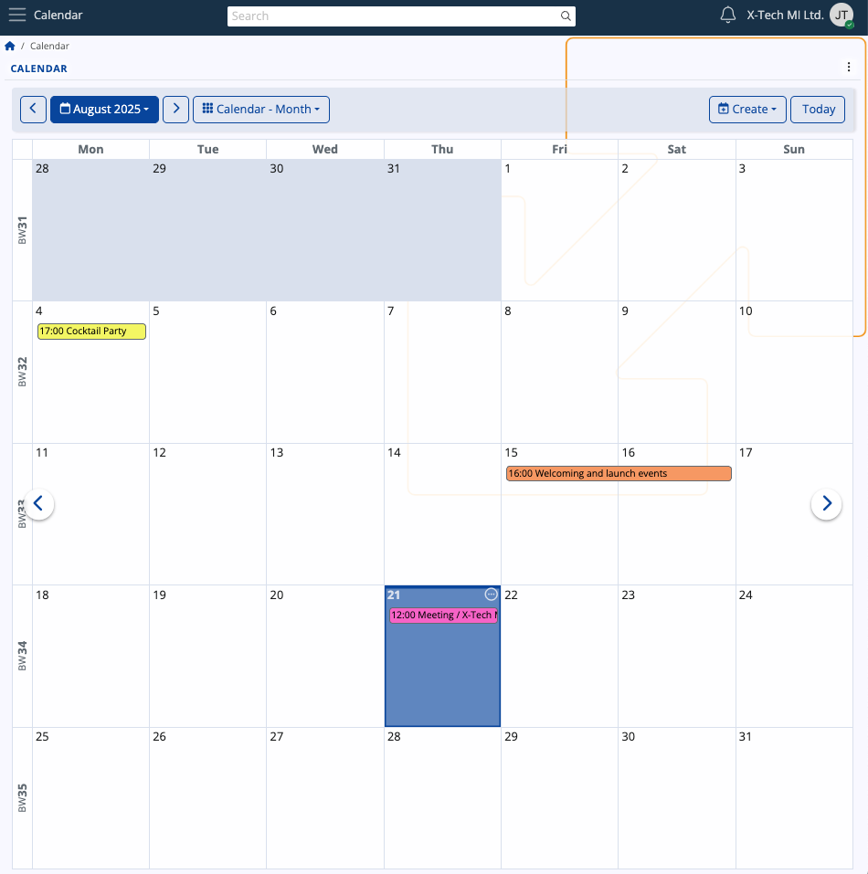

My Calendar
The ERP.net Calendar is a powerful time-management tool, allowing you to efficiently organize, monitor and synchronize your personal activities and tasks.
It also sums up group activities from the social groups you take part in, whenever you are marked as the responsible person, organizer, or a participant.

Interface
Views
The Calendar has several views allowing you to narrow down your activities to the current day, week, or month(s), or even see them spread across the year's quarters.
By default, the Month view is applied, showing the days of the current month and the activities in it, but you can change it at any time.
Simply click on the dropdown menu and select one of the other views.

Navigation
Using either the left (previous) or right (next) arrows, you can navigate across quarters, months, weeks and days.
This allows you to revisit past activities or preview incoming ones.

Depending on your current view, you can navigate to a specific week or month from the blue-colored menu.
Use the date picker to select a specific date, month, or year.
If you've navigated away and wish to return to the present date, simply click Today.

Tip
You can also change the Calendar display view from the three-dot menu at the upper-right part of the page.

Business week numbering
The ERP.net Calendar employs the ISO 8601 standard for tracking the number of weeks of a calendar year:
- The last week of the previous year is always marked with the number corresponding to that year (e.g. week 52 of 2023)
- The first week of the next year is always marked with the number corresponding to that year (e.g. week 1 of 2024)
However, when the last ISO week of the previous year falls into the first three days of the next year, it is always marked as week 0 for the new year.
This way, the Calendar treats January 1st as the true beginning of a year, yet still respects the ISO standard from Week 1 onward.

Monthly and weekly notation
Within the Calendar, you can see each week labeled with its corresponding BW number, which stands for "Business Week number".
In Workweek view, this label is positioned at the upper-left corner of the Calendar, clearly showing which week of the year this is.

In Month view, the labels are positioned vertically on the left of the Calendar, and their number depends on how many weeks the month has.

In other Calendar views as well as ERP.net navigators making use of the date picker, you will also find BW labels.

Activities
Your activities are summarized and displayed within the Calendar, with their titles fitting into the respective time slots.
Details
If you hover the mouse over an existing activity, you can see more details about it in a pop-up.

In Month view, the starting time of an activity is always shown to the left of its title.
It is also possible to see a list of all activities for a given day by clicking the circular button at the top-right corner of a date.

Scope of activities
As a general rule, the Calendar shows you all activities where you are designated as the Owner, Responsible Party or a Participant.
The Calendar will also show activities from social groups you take part in. If a member from your organization is not part of the same groups as you are, they will not be able to see nor access your group events, and vice versa.
Create an activity
To add a new activity from scratch, click on a date and press the Create button.
It will expand a dropdown with several options, including a meeting, task or even sick day.

Once you make your choice, you will be taken to the Activity document form where you need to fill out all the necessary fields regarding the activity and individuals who may be involved in it.
These fields also serve as crucial piece of data that will appear in all intended participants' Calendars.
You can add a Subject, Start and End Time, as well as a Responsible Party.

When you're finished, click Save and reload, and the activity will be added to your Calendar.
Edit activity
You can open any activity by clicking on its title.
Inside the document, you can change the subject, date or any other aspect.
Upon saving the changes, they will be immediately reflected in the Calendar.
Broader use
The Calendar is not confined to a single location.
In the ERP.net Dashboard, for instance, you can integrate it as a panel, accessible whenever needed.
Note
The screenshots taken for this article are from v.26 of the platform.